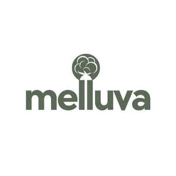

Trade Mark Journal No.2025/045 7 November 2025
UK00004283202 24 October 2025 (24,27,35)

- Class 24
- Towel sheet; Turkish towel; Quilts of towel; Towels; Bath wrap towels; Kitchen towels of cloth; Bath towels; Bathroom towels; Dish towels; Glass cloths [towels]; Dish towels for drying; Bath sheets (towels); Kitchen towels; Hand towels; Terry towels; Hooded towels; Face towels; Tea towels; Beach towels; Yoga towels; Face cloths of towelling; Turban towels for drying hair; Large bath towels; Kitchen towels of textile; Kitchen towels [textile]; Textile face towels; Face towels of textile; Hand towels of textile; Towels of textile; Towels [of textile]; Towels [textile]; Towels [textile] for the beach; Turkish towels; Face towels of textiles; Textile hair drying towels; Cloth napkins; Towels [textile] for kitchen use; Japanese cotton towels (tenugui); Golf towels; Towels of textiles; Glass-cloth [towels]; Bath linen; Textile exercise towels; Bed linen of paper; Tea cloths; Linen cloth; Bath mitts; Bath gloves; Make-up (Napkins for removing -) [cloth]; Cloth napkins for removing make-up; Washing mitts for toilet use; Children's towels; Household linen, including face towels; Duvet covers; Covers for eiderdown and duvets; Valanced bed sheets; Silk bed blankets; Duvets; Bed linen and blankets; Fabric bed valances; Bed linen; Linen for the bed; Linen (Bed -); Canopies (bed linen); Cot bumpers [bed linen]; Valanced bed covers; Fitted bed sheets; Textile covers for duvets; Comforters (bedding); Quilted blankets [bedding]; Covers for duvets; Crib bumpers [bed linen]; Valance sheets; Bed sheets of plastic [not being incontinence sheets]; Bed sheets of plastic, not being incontinence sheets; Bed valances; Pillowcases [pillow slips]; Eiderdown covers; Valence linen; Blankets (Bed -); Bed blankets; Flat bed sheets; Pillow shams; Shams (Pillow -); Bed linen and table linen; Bed sheets of paper; Sofa blankets; Chenile fabric; Ticks (mattress and pillow coverings); Towelling coverlets; Terry linen; Curtains and lace curtains of textiles or plastic; Eiderdowns; Shower curtains of textile or plastic; Bed blankets made of cotton; Bed clothes and blankets; Linen [fabric]; Silk blankets; Loden cloth; Eiderdowns [down coverlets]; Covers (fitted toilet lid -)[fabric]; Fitted toilet lid covers of fabric; Covers (Fitted toilet lid -) of fabric; Bed covers of paper; Chenille fabric; Fitted toilet covers [fabric]; Linen lining fabric for shoes; Curtains of plastic; Curtains of textile or plastic; Quilt bedding mats; Damask; Fitted toilet lid covers [made of fabric or fabric substitutes]; Foulard [fabric]; Cheviot fabric; Bedsheets of leather; Woolen fabric; Bed covers; Counterpanes; Infants' bed linen; Comforters [covers]; Cot sheets; Pillow cases; Covers for pillows; Bed quilts; Mattress covers; Bed pads; Contoured mattress covers; Futon quilts; Pillowcases; Cotton blankets; Bed coverings; Bed throws; Sleeping bag sheet liners; Cushion covers; Paper pillowcases; Covers for cushions; Cushions (Covers for -); Cot blankets; Sleeping bag liners; Woven fabrics for cushions; Mattress slips [other than incontinence]; Ticks [mattress covers]; Quilt covers; Crib sheets; Covers for mattresses; Baby blankets; Bed clothes; Tulle for dressmaking; Cloths for removing make-up; Taffeta [cloth]; Lap rugs; Tartan travelling rugs; Travellers' rugs; Travelling rugs; Travelling rugs [lap robes]; Unfitted fabric slipcovers for furniture; Woven fabrics for furniture; Woven fabrics for sofas; Fabric place mats; Coverings for furniture; Throws (furniture coverings); Cloth for tatami mat edging ribbons; Mats of linen; Furniture coverings of textile; Coverings (Furniture -) of textile; Jute fabric; Unfitted fabric furniture covers; Loose furniture coverings; Coverings (Loose -) for furniture; Loose coverings for furniture; Upholstery fabrics; Jute cloth; Wool yarn fabrics; Silk fabrics for furniture; Furnishing and upholstery fabrics; Textiles for upholstery; Woven fabrics for armchairs; Fabric curtains; Sofa covers; Bedroom textile fabrics; Household textile goods; Textile fabrics for making up into household textile articles; Textile fabric; Textile fabrics; Quilts of textile; Textiles for furnishings; Textile fabrics for use in the manufacture of furniture; Household textiles; Furnishing fabrics being textile piece goods; Textiles; Household textile piece goods; Curtains of textile; Textile goods for use as bedding; Fabrics being textile piece goods for use in embroidery; Textile fabrics for making into clothing; Tapestries of textile; Textile goods, and substitutes for textile goods; Textile used as lining for clothing; Textiles for interior decorating; Textile fabrics for making into linens; Doilies of textile; Waterproof textile fabrics; Textile fabrics for use in the manufacture of sportswear; Textile fabrics for the manufacture of clothing; Wall decorations of textile; Fabrics being textile piece goods; Textile fabrics for lingerie; Tablemats of textile; Tablecloths of textile; Textile tablecloths; Textile fabrics for use in the manufacture of wall coverings; Non-woven textile fabrics; Household textile articles; Rubberized textile fabrics; Textile fabrics for use in manufacture; Fabrics for manufacturing garden furniture; Textile fabrics in the piece; Household textile articles made from non-woven materials; Hand-towels made of textile fabrics; Curtains made of textile fabrics; Textile piece goods made of cotton; Place mats of textile; Textile place mats; Textile fabric piece goods for the manufacture of upholstered furniture; Pennants of textile; Textile piece goods for clothing; Fabrics being textile piece goods for use in tapestry; Non-woven textile piece goods; Textile fabrics for use in the manufacture of bedding; Textile fabrics for use in the manufacture of curtains; Textile piece goods for making curtains; Suiting materials [textile]; Textile piece goods; Piece goods (Textile -); Textile fabric piece goods for use in the manufacture of clothing; Disposable bedding of textile; Handkerchiefs of textile; Textile handkerchiefs; Textile fabrics for making into blankets; Handcrafted textile wall hangings; Curtains made of textile materials; Curtains made from textile materials; Textile fabrics for use in the manufacture of beds; Textile coasters; Coasters of textile; Reinforced fabrics [textile]; Textiles and substitutes for textiles; Covered rubber yarn fabrics [for textile use]; Linings [textile]; Fabrics being textile piece goods for use in manufacture; Fabrics being textile piece goods for use in patchwork; Fabrics for textile use; Textiles made of cotton; Textile piece goods for making into clothing; Textiles in the form of window furnishings; Plastic woven textile materials for use in agriculture; Textile fabrics for use in the manufacture of towels; Non-woven textiles; Small curtains made of textile materials; Textile piece goods for use in the manufacture of industrial filters; Textile fabrics for use in the manufacture of pillowcases.
- Class 27
- Cloth wall coverings; Textile floor mats for use in the home; Mats; Yoga mats; Wrestling mats; Tatami mats; Non-slip mats; Floor mats; Paper floor mats; Underlay for mats; Floor mats of cork; Paper bath mats; Rubber mats; Bath mats; Door mats; Cork mats; Fabric bath mats; Rubber bath mats; Rugs [mats]; Bathroom mats; Gymnastic mats; Door mats of textile; Gymnasium mats; Plastic bath mats; Japanese rice straw mats (tatami mats); Non-slip mats for baths; Non-slip mats for showers; Reed mats; Non-slip floor mats for use under apparatus; Puzzle mats [floor coverings]; Straw mats; Textile bath mats; Beach mats; Wooden door mats; Door mats of india rubber; Chair mats [under-chair floor protector]; Diatomite bath mats; Runners [mats]; Play mats; Car mats; Goza rush mats; Horse stall floor mats; Gymnasium exercise mats; Floor mats for vehicles; Floor mats for automobiles; Personal sitting mats; Floor coverings [mats] for use in gymnastic activities; Carpets, rugs and mats; Foam mats for use on play area surfaces; Vehicle mats and carpets; Baby crawling mats; Mushiro straw mats; Straw mats [mushiro]; Personal exercise mats; Mats of woven rope for creating ski slope surfaces; Mats of woven rope for ski slopes; Ski slopes (Mats of woven rope for -); Matting; Pet feeding mats; Floor coverings [mats] being sheet materials for use in sporting activities; Floor coverings [mats] for use in sporting activities; Vehicles mats and carpets; Rugs (Floor -); Tiles (Carpet -); Carpet tiles; Carpet underlay; Carpets; Carpet underlays; Carpet padding; Carpet tile backing; Carpet backing; Carpeting; Carpet runners; Carpet inlays; Bathroom tiles [carpet]; Underlay for carpets; Carpet tiles for covering floors; Carpet underlining; Floor tiles made of carpet; Carpet tiles made of textiles; Carpet tiles made of rubber; Carpet tiles made of plastics; Carpets [textile]; Moquettes [carpets]; Underlays for carpeting; Vehicle carpets; Automobile carpets; Primary carpet backing; Carpets for automobiles; Linoleum tiles [floor coverings]; Carpeting for vehicles; Anti-slip material for use under carpets; Rugs; Fur rugs; Bathroom rugs; Hand made woollen carpets; Vinyl floor coverings; Underlays for rugs; Rugs (Door -); Vinyl floor coverings for existing floors; Floors coverings of rubber; Linoleum tiles; Area rugs; Prayer rugs; Oriental non-woven rugs (mosen); Anti-slip material for use under rugs; Rugs for animals; Fabric wall coverings; Floor coverings; Coverings (Floor -); Textile wallcoverings; Textile wallpaper; Textile wall coverings; Wall coverings of textile; Wallhangings, not of textile; Textile lined wallpaper.
- Class 35
- Market research and market analysis; Market forecasting; Market analysis; Market canvassing; Market segmentation consultation; Market research; Research (Market -); Market surveys; Surveys (Market -); Market campaigns; Consumer market information services; Market analysis services; Direct market advertising; Business and market research; Market information services relating to market statistics; Market research for advertising; Market assessment services; Grain market analysis; Market research services; Market intelligence services; Market prospecting; Market research services for publishers; Market analysis services relating to the sale of goods; Provision of an on-line marketplace for buyers and sellers of goods and services; Providing market information in relation to consumer products; Market studies; Provision of an online marketplace for buyers and sellers of goods and services; Market study services; Business analysis of markets; Market analysis services relating to the sale of antiques; Computerised market research; Market reporting services; Computerized market research services; Analysis of markets; Market analysis services relating to the availability of goods; Market study and analysis of market studies; Market research and business analyses; Market analysis services relating to the availability of antiques; Market research and analysis services; Market analysis and research services; Market research and analysis; Market analysis and research; Providing market intelligence services; Market assessment consultancy; Market research by means of a computer data base; Market survey analysis; Market research consultancy; Market research by means of a computer database; Conducting of market research; Conducting market surveys; Business analysis and information services, and market research; Provision of market research information; Market reporting consultancy; Market research services regarding customer loyalty; Providing market research statistics; Market investigation via the telephone; Market analysis reports; Market analysis studies; On-line trading services in which seller posts products to be auctioned and bidding is done via the Internet; Analysis of advertising response and market research; Conducting business and market research surveys; Market information services relating to trade reports; Market research data analysis; Analysis of market research data; Interviewing for qualitative market research; Market research data collection services; Market research services relating to broadcast media; Market research and marketing studies; Market research data retrieval services; Providing online marketplaces for sellers of goods and or services; Market information services relating to index levels; Arranging and conducting of flea markets; Trade marketing [other than selling]; Advisory services relating to market research; Interviewing for market research purposes; Research and analysis in the field of market manipulation; Market research services regarding Internet usage habits; Compilation of statistical models for the provision of market dynamics information; Analysis of market research statistics; Collection of market research information; Advertising automobiles for sale by means of the Internet; Market research for compiling information on viewers of television; Interpretation of market research data; Market research studies; Preparation of market analysis reports; Market surveys conducted by telephone; Retail services in relation to dairy products; Wholesale services in relation to dairy products; Business administration services for the processing of sales made on a global computer network; Demonstration of goods and services by electronic means, also for the benefit of the so-called teleshopping and homeshopping services; Market opinion polling studies; Retail services in relation to disposable paper products; Retail services in relation to bakery products; Advertising services for promoting the brokerage of stocks and other securities; Presentation of companies and their goods and services on the Internet; Mail order retail services for cosmetics; Provision of advertising space by electronic means and global information networks; Business management of wholesale and retail outlets; Business management of retail outlets; Retail store services in the field of clothing; Administration of the business affairs of retail stores; Online retail store services in relation to clothing; Retail services in relation to confectionery; Online retail store services relating to clothing; Retail services connected with the sale of furniture; Unmanned retail store services relating to food; Retail services in relation to footwear; Unmanned retail store services relating to drink; Retail services in relation to beer; Retail services in relation to jewellery; Retail services in relation to furnishings; Retail services in relation to furniture; Retail services in relation to clothing; Retail services in relation to saddlery; Shop retail services connected with carpets; Retail services in relation to lighting; Retail services relating to furniture; Retail services in relation to toys; Retail services in relation to chocolate; Online retail services relating to jewelry; Online retail services relating to clothing; Retail of third-party pre-paid cards for the purchase of clothing; Retail services in relation to yarns; Retail services relating to clothing; Online retail services relating to cosmetics; Management of a retail enterprise for others; Retail services in relation to fashion accessories; Retail services in relation to pet products; Retail services in relation to bags; Retail of third-party pre-paid cards for the purchase of entertainment services; Retail services in relation to metal hardware; Retail services in relation to fabrics; Online retail services relating to toys; Retail services in relation to gardening products; Online retail store services relating to cosmetic and beauty products; Retail services relating to horticultural products; Retail services in relation to safes; Retail services in relation to bicycle accessories; Online retail services relating to handbags; Mail order retail services for clothing; Retail services in relation to car accessories; Retail services in relation to horticulture equipment; Retail services in relation to floor coverings; Retail services in relation to stationery supplies; Retail services in relation to toiletries; Retail services in relation to paints; Retail services relating to home textiles; Retail services in relation to bicycles; Retail services in relation to umbrellas; Retail services in relation to luggage; Retail services relating to accumulators; Retail shop window display arrangement services; Online retail services for downloadable digital music; Online retail services relating to luggage; Retail services connected with the sale of clothing and clothing accessories; Retail services in relation to educational supplies; Mail order retail services for clothing accessories; Retail services relating to furs; Retail services in relation to sporting equipment; Retail services in relation to building materials; Retail services in relation to construction equipment; Retail services in relation to kitchen appliances; Retail services in relation to wall coverings; Retail services in relation to art materials; Online advertising; Online marketing; Online advertisements; Advertising the goods and services of online vendors via a searchable online guide; Online ordering services; Online advertising services; On-line advertising; Providing a searchable online advertising guide featuring the goods and services of online vendors; Providing a searchable online advertising guide featuring the goods and services of other on-line vendors on the internet; Providing searchable online advertising guides; Online advertising on computer networks; Online advertising on a computer network; Online business networking services; Business information services provided online from a computer database or the internet; Compilation of online business directories; On-line auctioneering services via the Internet; Online retail services for downloadable and pre-recorded music and movies; On-line promotion of computer networks and websites; Online advertising via a computer communications network; On-line auctioneering; Computerized on-line ordering services; Business information services provided online from a global computer network or the internet; Online retail services for downloadable ring tones; Business information services provided on-line from a computer database or the internet; Dissemination of advertising matter online; Online community management services; On-line advertising on computer networks; On-line advertising on a computer network; Promotion, advertising and marketing of on-line websites; Providing an on-line commercial information directory on the internet; Arranging subscriptions of the online publications of others.
MELLUVA LTD